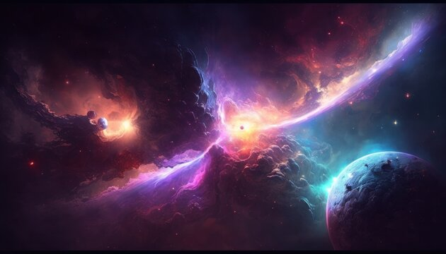
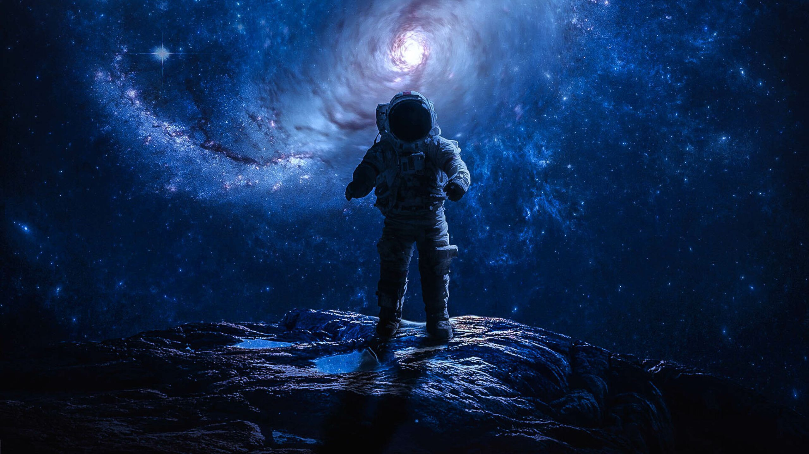

Galaxies: Vast cosmic cities, galaxies house billions of stars, planets, and cosmic dust. The Milky Way, our galaxy, is a spiral containing our solar system. Galaxies come in various shapes: spirals, ellipticals, and irregulars.

Dark Matter: Though invisible, dark matter exerts gravitational forces shaping the cosmos. It comprises around 27% of the universe's mass-energy content, yet its nature remains a profound mystery, challenging physicists' understanding of fundamental particles and their interactions.

Black Holes: These mysterious cosmic vacuums result from the collapse of massive stars. Gravity is so intense within them that nothing, not even light, can escape. Studying them unveils secrets of gravity and spacetime.

Dark Energy: Accounting for about 68% of the universe's content, dark energy propels its accelerating expansion. Unlike gravity, dark energy pushes galaxies apart, stretching the fabric of spacetime. Its nature is elusive, posing one of cosmology's greatest conundrums.
Supernovae: These cataclysmic explosions mark the end of a massive star's life, releasing immense energy and scattering heavy elements across space. They illuminate galaxies, enrich interstellar gas, and play a vital role in shaping cosmic evolution.

Gravitational Waves: Ripples in the fabric of spacetime, gravitational waves are produced by the most violent events in the universe, such as merging black holes or neutron stars. Their detection opens a new window to observe and understand the cosmos, confirming Einstein's predictions.